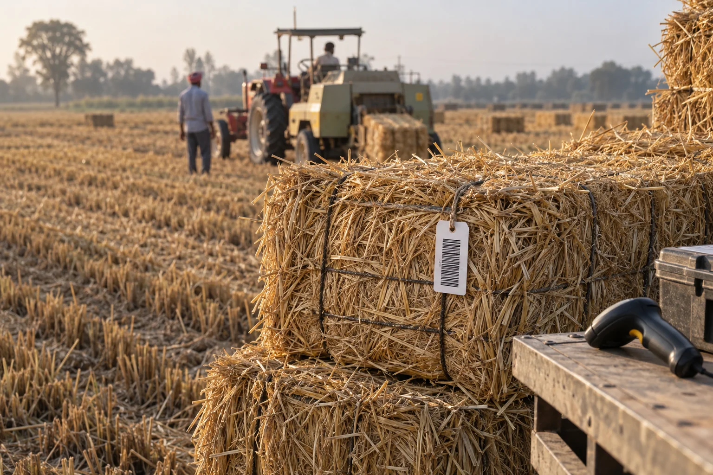
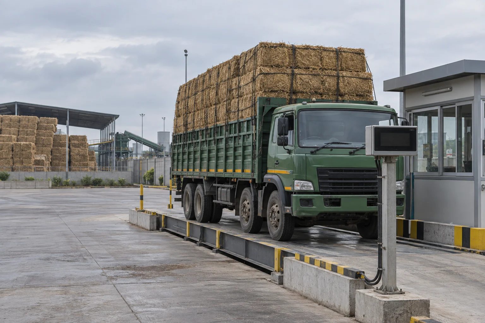
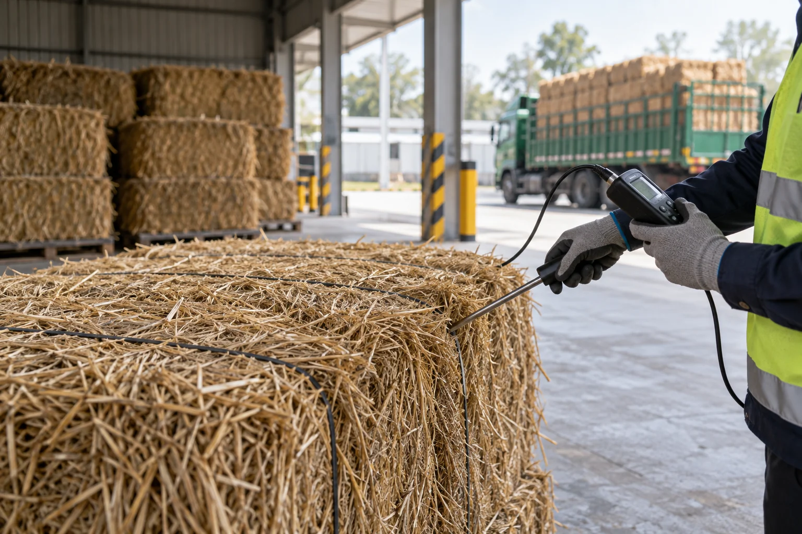

VARTUL / PARALI TO BIO-CNG
Every bale.
A clear journey.
Paddy straw, collected and connected.
From farm source to Bio-CNG plant receipt.
01 / FIELD COLLECTION
A harvest ends.
A journey starts.
Collected paddy straw begins with
a field source and a collection record.
An illustrative collector-to-plant route.
No actual farmer, location or harvested quantity is represented.
Keep the source
with the straw.
The source reference is recorded. The supporting field collection document is still missing.
02 / BALING & LOT IDENTITY
Form the bale.
Keep its identity.
A bale tag links physical straw
to the collection lot it belongs to.

Bale linked
to its lot.
The sample tag retains the source link through collection lot PL–024.
03 / AGGREGATION & STORAGE
Bring it together.
Keep it distinct.
Store the bales with their lot reference.
Record which lot is issued to each load.
A handoff
worth keeping.
The storage record links the received lot to the next outbound load, without losing the field source.
04 / LOADING, TRANSPORT & WEIGHBRIDGE
One load.
Many linked records.
Connect the lot, vehicle reference
and plant weighbridge receipt.
Sample vehicle reference VH–07.
No live location tracking or measured weight is shown.

The load meets
its receipt.
Receipt WB–024 connects to the same vehicle and lot. Weight values are not supplied in this demo.
05 / QUALITY CHECK & PLANT RECEIPT
At the plant.
Still connected.
The delivery record links the load,
weighbridge and intake-quality check.
This journey ends at feedstock receipt.
Plant-specific pretreatment and digestion are outside this demo.

The check stays
with the load.
A sample intake-quality record is attached. No moisture value or acceptance threshold is asserted.
06 / THE SOURCE BEHIND THE DELIVERY
Scan the delivery.
Trace it to the field.
One plant receipt. A connected supply journey.
PLANT RECEIPT → LOAD → FARM SOURCE
Follow the delivery backwards.
Review the intake records, then trace the vehicle load, aggregation and bale identity back to collection.
Simulated identifier scan · No camera or live lookup
- Receipt
- Intake checks
- Load
- Aggregation
- Bales
- Source
Read the collector-to-plant route as a list
- →
- Bales → →
- Load → +
- Receipt + quality record →
Illustrative sources, loads and records. A captured identifier or receipt does not independently verify the supply chain.
VARTUL FOR PARALI COLLECTORS & SUPPLIERS
Move the straw.
Keep the evidence.
Chain Verification
Review the source and handoff records. Keep evidence gaps visible across the journey.
An interactive demonstration. No live device integrations, measured quantities or gas-output claims are represented.